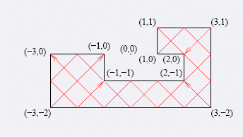

多边形相邻边垂直，边长为整数，边平行坐标轴。要在多边形的点上放一些激光发射器和接收器。满足下列要求： 1发射器和接收器不能放置在同一点； 2发射器发出激光可以沿壁反射，最终到达一个接收器； 3发射器只能沿角平分线发射激光。求：最多可放置多少对发射器和接收器？点数4<=n<=100000
第一行给出一个数字N,代表有多少个点. 下面N行,用来描述点的坐标.其值在[-1000000,1000000]
最多可放置多少对发射器和接收器
10 1 1 3 1 3 -2 -3 -2 -3 0 -1 0 -1 -1 2 -1 2 0 1 0 
5
感谢YYD大牛贡献译文.